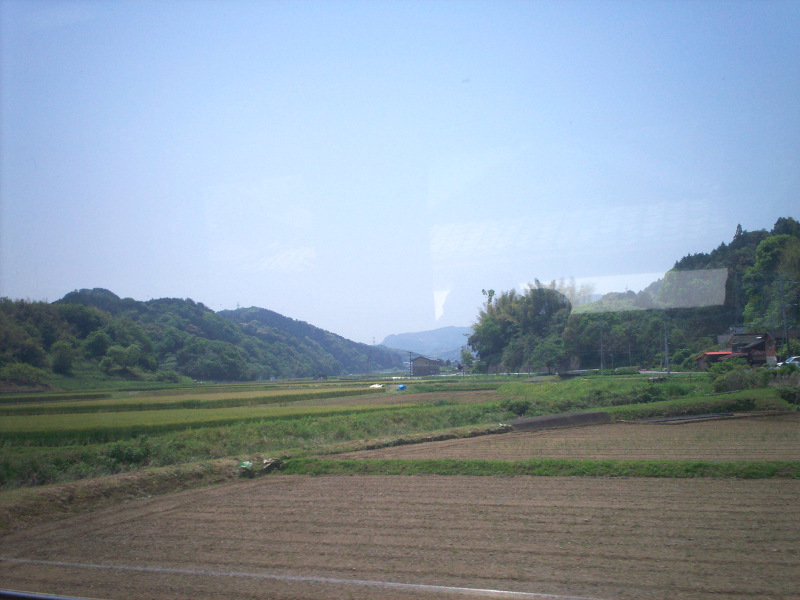
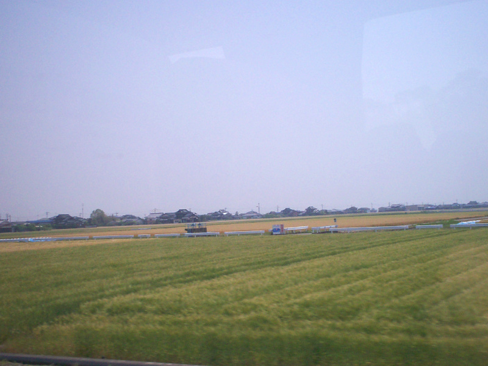

Midori Line
Time to read: 4 min
May 8, 2007
F-ko-ka?? HU-HO-KA??
…To SAH-SEA-BO!
forget it- wheres the Nice lady at the desk….
(Its FOO-KOE-KA to SAH-SEY-BO). You were headed to Eastern Nagasaki Prefecture. Or- you thought you were – but something doesnt translate well…
-No reason to start cussing at the nice Lady at the airport.
We know your Japan-eeze is lousy.
We know you already had a late night layover from Nari-ta in Toke-yo…
.. and that strong as hell Japan-eze coffee hasnt kicked in yet..
Either that, or you had a booze-fest at the Chu-hi vending station once you discovered it.
Yes, I been there tooo.. :-)
The bus comes to one terminal and you catch the train at the DEPOT at the other. –But I forget which. Its been like forever.
By the time I bounce from Narita to Fook I usually get off(confuse, me!) at the mega-lo-don train station terminal (JR) upstairs or am so exausted that I go outside(up up , around everything-but UP) and acroos the street at the Best Western hotel.
If you wind up near a bidge and a used computer store around the corner- you either have a very long walk around the block or you probly took the wrong exit from the plethora of stores when you went up. Turn around and go the other way.
The bus(should you choose it from the airport) eventually will leave you full of bags in downtown Sasebo.
The train will generally drop you in same business quarter but often at orders of magnitude faster. And often taxi are more prevalent at the train station.
The strain station is further down the road, vice the bus stop(like a small greyhound stop) in the middle of the street traffic.
I will have to freeze frame a train station photo from the Sasebo video…


There really isnt much out there in between. A lot of nowhere-ville small villas. Thats about it.
This is like going velly velly long distance between Man-hatt-an (NYC) and the far-far tip of Long Island. Bring your lunch with you- theres no hot towels or anything. Go grab some hot buns or a book.
You got what you paid for the moment you boarded the train. Stop complaining. Its a 3.5 hour bus ride. If your lucky, light traffic will get you there in 1.5 hours by train.
..All the while…
Now approaching….. xxx … now leaving xxx … thank you for choosing us….have a nice day….
(Well there is a local line in town that does that like every 30 seconds and the local bus lines are just as annoying. But if you need to get to the zoo, for example, they will get you there.)
If I could only remember WHERE to get off…?
So how does it fare?

-Average.
Nothing Fancy.
Its not the Bullet train on track TWO….you DID get off at the right town…cor-rect?
How does one say LOST in Japan-eeze?
[This is how to say, not spell it.]
Firstly:
Sue-mee-mah-sen [Excuse me]
Ko Ko-wah door-ay desk-a? [Where oneself is?]
(noun) Ko rey-wah do-ko desk-a? [Where it is?]
or more formally:
Gah ushi-nah-wa rey [one is lost.]
Reply:
ko ko wa dez [here it is]
Ahn-ata-wah ko-ko ni eey-rue
[clearly, where-ever ‘here’ is, there you are.]
(they may repeat your lousy japanese back to you, so pay attention…but they might not reply in english…)
EE-tay soh-ray gah yoy dah-roo [it would be better to say…]